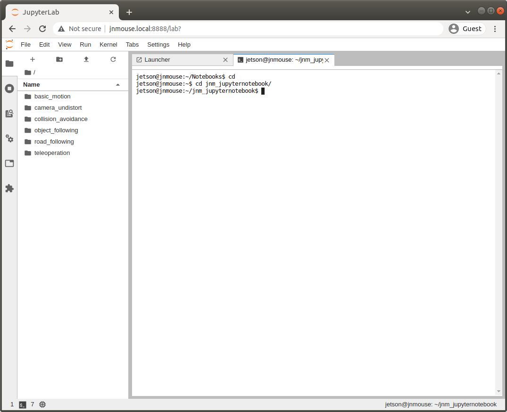

Jupyter Notebookの準備
このページではJetson Nano Mouse用AI教材であるrt-net/jnm_jupyternotebookの紹介をします。 またインストール方法を紹介します。
サンプルの概要
機械学習を利用したプログラムでロボットを動かすJupyter Notebookのサンプルです。 NVIDIA社が公開しているAIロボットキットであるJetBotのプロジェクトをベースにしています。 そのため、JetBotの解説を読みながら理解をすすめることもできます。
プロモーション動画の1:03以降で紹介しています。
このサンプルの実行に必要なもの
- Jetson Nano
- OS（JetPack 4.5.1）がインストール済みであること
- インストール方法についてはイメージファイルの書き込みを参照してください
- 「サンプルを動かす」での動作確認が済んでいること
- OS（JetPack 4.5.1）がインストール済みであること
- ノートパソコン等操作用PC
- Google Chromeが起動すること
- その他のブラウザでは正常に動作しない場合があります
- Jetson Nanoと同じネットワークに接続されていること
- Google Chromeが起動すること
Jupyter Notebookについて
Jupyter Notebookを使うとコードとドキュメントが一体化した「ノートブック形式」でコードとドキュメントを保存できます。

コードはテキストエディタやIDEで書いて、ドキュメントは別で用意することは一般的でしたが、Jupyter Notebookが使える場合にはコードを対話的に実行して動作確認し、ドキュメントを一緒につけて保存することができます。 Jupyter Notebookを活用した教材もあり、たとえば、千葉工業大学の上田隆一先生の「詳解 確率ロボティクス」ではJupyter Notebookでロボットのシミュレーションとアルゴリズムの解説をしています。
Jetson Nano Mouseの起動
コネクタ基板の向きを確認します。Motor SWをOFFにし、Main SWをONにしておきます。


JupyterLabへのログイン
Webブラウザでhttp://jnmouse.local:8888を開き、パスワード"jnmouse"を入力してログインします。

FileメニューからTerminalを起動します。

以後、このページ内のコマンドは以下の画像のようにこのTerminalに入力していきます。

Jetson Nano Mouse用のJupyter Notebookの更新
gitコマンドでrt-net/jnm_jupyternotebookを更新します。
$ cd $HOME/jnm_jupyternotebook
$ git pull
つぎにJetson Nano Mouse制御用のPythonパッケージ、「jnmouse」の最新版をインストールします。
$ sudo python3 setup.py install
次にダウンロードしてきた最新版のJupyter Notebookを~/Notebooksディレクトリにコピーします。
本チュートリアルで紹介しているイメージでは起動時に~/NotebooksディレクトリでJupyter Lab（Jupyter Notebookを拡張したもの）のサーバが8888番ポートで立ち上がるようになっています。
$ ./scripts/copy_notebook.sh
以上でJupyter Notebook実行のための準備は完了です。
最新のJupyter Notebookを読み込むため、ブラウザのタブを閉じておきます。
（ページのリロードでも問題ありません。）